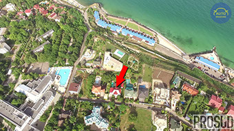

Про нас
Головна
Судді
Статті

Безапеляційно мажорне життя суддів київських апеляційних судів. Розслідування «PROSUD».
Частина 1. Сокуренко Дмитро Михайлович. 23 квітня 2014р. Указом в.о. Президента України Турчинова з апеляційного суду Донецької області до апеляційного суду міста Києва було переведено суддю Сокуренка Дмитра Михайловича.
Copyright © 2016 PROSUD